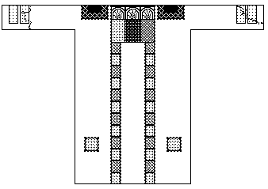
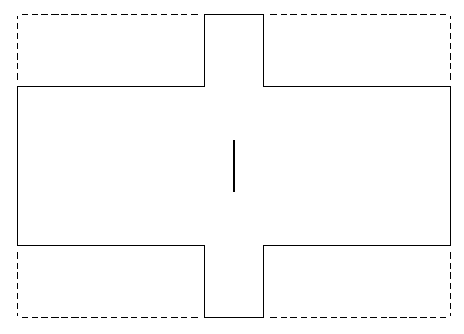
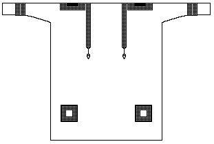
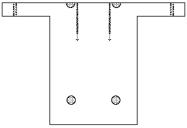

A tunica, or dalmatic, from Byzantine Egypt, (4th) 5th-6th Century. It is a bleached linen tabby with purple linen and wool decorations. The decorations on the front are covered with images of people. It is probably Coptic. It appears in the Walter Massey Collection, Royal Ontario Museum 910.1.11


A tunica, or dalmatic, from Byzantine Egypt, 5th-6th Century. It is a bleached linen tabby with purple, tapestry woven, linen and wool decorations. It appears in the Walter Massey Collection, Royal Ontario Museum 910.1.2

A tunica, or dalmatic, from Byzantine Egypt, 5th-6th Century. It is a bleached linen tabby with pale purple, tapestry woven, linen and wool applied roundel decorations
Return to Contents.
Some Clothing of the Middle Ages, by I. Marc Carlson, Copyright 1997. This code is given for the free exchange of information, provided the Author's Name is included in all future revisions, and no money change hands-